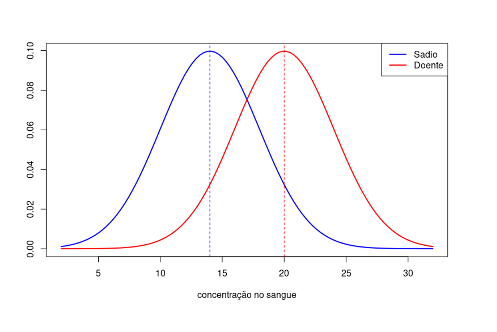
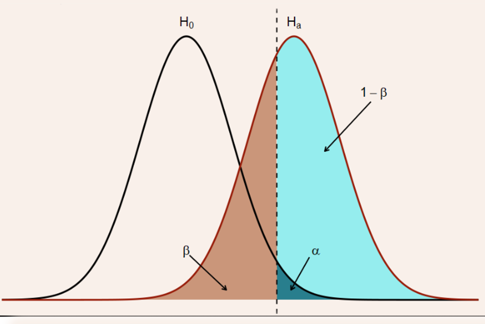
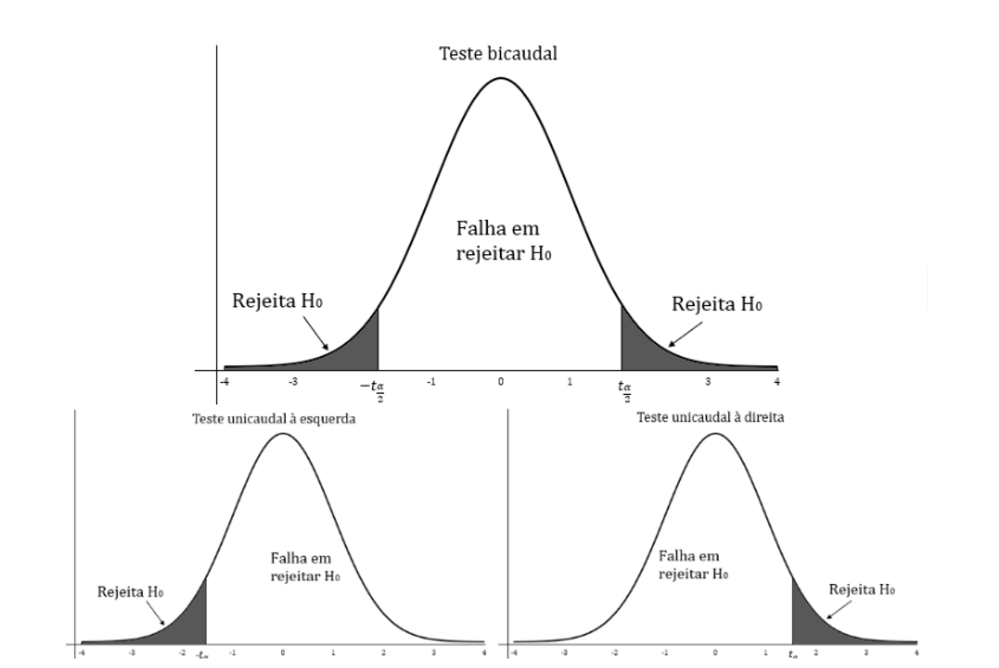
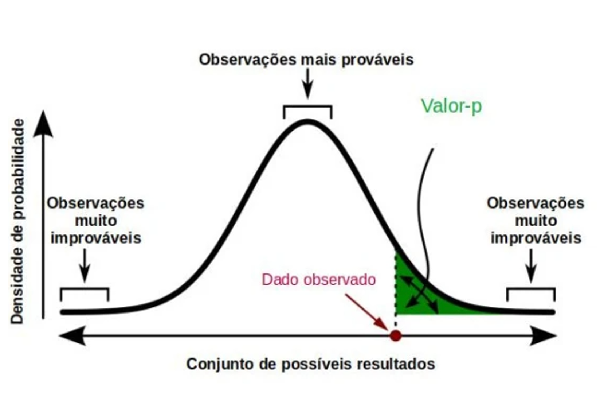

Os testes de hipóteses representam uma regra de decisão que permite rejeitar ou não uma hipótese questionada, decisão essa que é tomada em função de valores obtidos em uma amostra. O objetivo do teste de hipótese é fornecer ferramentas que nos permitam validar ou refutar uma hipótese a partir dos resultados de uma amostra. A técnica será ilustrada com base em um exemplo.
Exemplo
Suponha que, entre pessoas sadias, a concentração de certa substância no sangue se comporta segundo uma distribuição Normal com média 14 unidades/ml e desvio-padrão igual a 4 unidades/ml. Pessoas sofrendo de uma doença específica têm concentração média da substância com distribuição Normal e média alterada para 20 unidades/ml e desvio-padrão igual a 4 unidades/ml. A figura a seguir ilustra a situação descrita.

Fonte: Elaborado pelo autor (2025).
Note que as curvas, representando as concentrações, irão se cruzar em algum momento, fazendo com que certa proporção de indivíduos na população sadia possa apresentar valores de concentração tão altos quanto aqueles observados em pessoas doentes, ainda que esse evento ocorra com baixa probabilidade. Queremos saber se um certo tratamento proposto para combater a doença é eficaz. Assim, uma amostra aleatória de tamanho n=30 é selecionada entre indivíduos doentes que foram submetidos ao tratamento. Sejam X1,…,X30 as concentrações dos indivíduos da amostra, sabemos que para i=1,…,30, Xi ~ N(μ,4), sendo μ=14 ou μ=20 dependendo do tratamento ser eficaz ou não. Caso a amostra de 30 indivíduos forneça um valor médio de concentração alto e próximo de 20, teremos evidência de que o tratamento não é eficaz, ao passo que um valor baixo e próximo de 14 nos levaria a pensar que o tratamento é eficaz. O que significa ser próximo depende, entre outros fatores, da variabilidade da concentração na população. Como a amostra de 30 indivíduos é aleatória, precisaremos estudar probabilisticamente o problema por meio do teste de hipóteses.
Para realizar um teste de hipótese estatístico, você precisa considerar vários elementos importantes que ajudam a formular, conduzir e interpretar o teste de maneira correta. A seguir estão os principais elementos necessários para realizar um teste de hipótese:
Hipótese Nula (H0): é uma afirmação inicial ou padrão em que não há efeito ou diferença. A hipótese nula é geralmente a hipótese que o teste busca rejeitar. Por exemplo: não há diferença na média dos grupos A e B.
Hipótese Alternativa (H1 ou Ha): é uma afirmação que contradiz a hipótese nula, sugerindo que há um efeito ou diferença. A hipótese alternativa é o que você espera encontrar ou o que deseja demonstrar. Por exemplo: há uma diferença na média dos grupos A e B.
Erro Tipo I (α): o erro de rejeitar a hipótese nula quando ela é verdadeira.
Erro Tipo II (β): o erro de não rejeitar a hipótese nula quando ela é falsa.
Decisão
Situação
H0 verdadeira
H0 falsa
Rejeitar H0
Erro Tipo I (α)
Decisão correta
Não rejeitar H0
Decisão correta
Erro Tipo II (β)
O poder do teste (1 – β): é a probabilidade de rejeitar a hipótese nula quando a hipótese alternativa é verdadeira. Um teste de maior poder é desejável, pois reduz a probabilidade de se cometer um erro tipo II. A figura a seguir ilustra o erro tipo I, erro tipo II e o poder do teste.

Fonte: Elaborado pelo autor (2025).
O nível de significância é a probabilidade de rejeitar a hipótese nula quando ela é verdadeira (erro tipo I). É um limiar predefinido para decidir se o resultado de um teste é estatisticamente significativo. Os valores mais usados são α = 1%, 5% ou 10%.
A estatística de teste é um valor calculado a partir dos dados da amostra, que permite decidir se devemos rejeitar a hipótese nula.
A região crítica (ou valor crítico) é o intervalo ou ponto além do qual rejeitamos a hipótese nula. É determinada pela estatística de teste e pelo nível de significância. O valor crítico depende do tipo de teste (unilateral ou bilateral) e do nível de significância.
Dependendo da questão de pesquisa e da natureza dos dados, você deve escolher o tipo apropriado de teste de hipótese. As caudas em uma distribuição são as regiões extremas limitadas pelos valores críticos.
Teste bilateral (duas caudas): região crítica, está nas duas regiões extremas
Teste unilateral à direita: região crítica, está na região extrema (cauda) direita sob a curva.
Unilateral à esquerda: região crítica, está na região extrema (cauda) esquerda sob a curva.
Com base na estatística de teste e no valor crítico, você decide se rejeita ou não a hipótese nula:
Rejeitar H0: se o valor da estatística de teste está na área de rejeição.
Não rejeitar H0: se o valor da estatística de teste está na área de não rejeição.
A figura a seguir ilustra os tipos de teste e a regra de decisão com base no valor crítico.

Fonte: Elaborado pelo autor (2025).
O p-valor é a probabilidade de obtermos uma estatística de teste tão extrema quanto a observada, ou mais extrema, sob a suposição de que a hipótese nula é verdadeira. Se o p-valor é menor do que o nível de significância (p < α), rejeitamos a hipótese nula. A figura adiante ilustra o p-valor para um teste unilateral à direita.

Fonte: Elaborado pelo autor (2025).
As etapas para realização dos testes de hipóteses são:
Enunciar as hipóteses H0 e H1.
Determinar um nível de significância (α) aceitável.
Determinar a região crítica.
Calcular o valor da Estatística de Teste
Rejeitar ou não a hipótese nula de acordo com a estimativa obtida no 4º item, em comparação com a região crítica estabelecida no 3º item ou comparar o p-valor obtido com o nível de significância.
Agora que sabemos quais são os principais elementos e as etapas para elaboração de um teste de hipóteses, veremos alguns tipos de teste que estão divididos em teste de hipóteses para média e teste de hipóteses para proporção.
O VisualG é uma ferramenta muito utilizada para o ensino de programação, especialmente no Brasil, devido à sua simplicidade e facilidade de uso. Ele permite que os algoritmos escritos em Portugol sejam visualizados e executados de forma prática, ajudando estudantes a entender como suas instruções são processadas por um computador. Com uma interface gráfica intuitiva, o VisualG possibilita a criação e o teste de algoritmos em um ambiente controlado, sem a necessidade de dominar linguagens de programação mais complexas. Isso o torna uma excelente ferramenta para iniciantes, que podem focar na lógica da programação sem se preocupar com a sintaxe rígida de linguagens mais avançadas.
Embora não utilizemos o VisualG diretamente neste curso, você pode baixá-lo gratuitamente, caso tenha interesse em explorar a ferramenta por conta própria